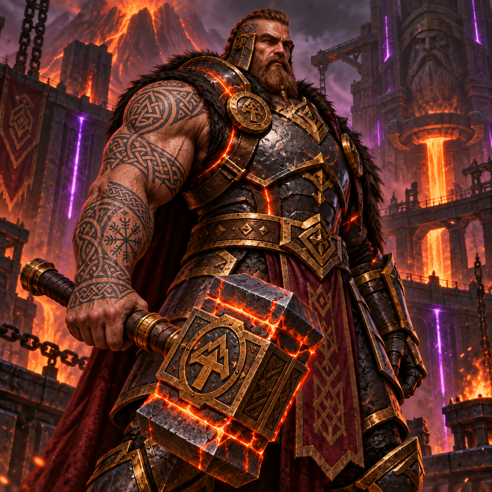

🔨 Martelo de Ostrogard
⭐ Lendário
Relíquia das fundições de Ostrogard. Necessário para usar a habilidade Regeneração de Construção.
Guerreiro-Arquiteto Digital

Nascido nas fundições de Ostrogard, Vulcano forjou armas para os guerreiros de seu reino e foi lá que criou sua própria lâmina. Onde outros viam sucata, ele via invenções esperando para nascer. Resolvia problemas estruturais e fortalecia as defesas do reino, transformando o descartado em solução.
Filho do soberano conhecido como Imperador da Lava, Vulcano nasceu destinado ao trono de Ostrogard. Desde pequeno, porém, trocava o silêncio dos salões pelo som dos martelos nas fundições.
Foi ao lado do tio, mestre ferreiro do reino, que aprendeu a trabalhar o ferro, recuperar materiais descartados e construir defesas capazes de resistir ao tempo.
O menino curioso cresceu entre projetos de muralhas e ferramentas gastas. Tornou-se um homem de porte imponente, força extraordinária e olhar atento aos problemas de seu povo. Enquanto o pai lhe ensinava a governar, o tio mostrava o que sustentava uma cidade: o trabalho de quem erguia suas casas, mantinha suas pontes e protegia suas fronteiras.
Sua primeira grande criação foi o Martelo de Ostrogard. Forjado com metal retirado das profundezas da montanha, ele parecia guardar o calor da fornalha mesmo depois de esfriar. Vulcano descobriu seu poder durante o desabamento de uma torre: ao golpear a base destruída, viu as pedras se unirem novamente. O esforço quase o deixou indefeso sob os escombros, mas os trabalhadores conseguiram escapar.
Anos depois, recebeu a coroa das mãos do pai. Mesmo como rei, nunca abandonou a forja. Sob seu comando, antigas ruínas deram lugar a moradias, as muralhas foram reforçadas e Ostrogard viveu um longo período de paz.
Até a noite em que os fornos se apagaram.
Um tremor percorreu a cidade, abrindo uma rachadura na muralha norte. Vulcano tentou restaurá-la, mas, pela primeira vez, as pedras não responderam. Seu martelo brilhou com intensidade e revelou marcas escondidas sob a fundação — os mesmos símbolos que ele havia encontrado no Pergaminho de Estruturas Perdidas.
Ao consultar o documento, percebeu que aquelas linhas não descreviam uma fortaleza. Eram o desenho de um selo, construído para manter algo preso sob o reino.
Antes do amanhecer, chegou uma notícia das minas: seu tio havia desaparecido ao investigar uma passagem recém-aberta. No chão, os guardas encontraram apenas uma ferramenta quebrada e uma mensagem gravada na rocha:
“Não reconstrua a entrada. Venha descobrir o que estamos guardando.”
Vulcano reuniu o pergaminho, prendeu o martelo à cintura e desceu em direção às fundições. Desta vez, teria de descobrir o que havia sob as muralhas antes de decidir como protegê-las.
Continua na Parte 2…
⚔️ Força — 75%
🔨 Poder de Construção — 90%
🛡️ Defesa — 95%
✨ Engenhosidade — 85%
🏃 Agilidade — 50%
Vulcano usa o Martelo de Ostrogard para reconstruir estruturas danificadas e fortalecer as defesas do reino.
⚠️ Durante o uso, Vulcano fica vulnerável: os inimigos causam dano acima do normal.
⭐ Lendário
Relíquia das fundições de Ostrogard. Necessário para usar a habilidade Regeneração de Construção.
Raro
Guarda projetos antigos de muralhas e mecanismos de defesa do reino.
Comum
Preparado usado pelos ferreiros para suportar longas jornadas na forja.
Nenhuma muralha se ergue sozinha. Junte-se aos guerreiros e construtores de Ostrogard para compartilhar projetos e proteger o reino.
Acessar o Discord ↗Guilda fictícia criada para este projeto. O link abre o site do Discord, não um servidor da guilda.